Gününü planla, tohum kazan, bahçene bak ve günlük tut. Uygulamadaki her sistem, kural ve ödül tek bir yerde.
Kazandığın her tohum, aldığın her bitki ve kurduğun her seri bir görevi bitirmekle başlar.
Yaz ya da mikrofona dokunup söyle. BloomDay telefonunun kendi konuşma tanıma özelliğiyle dinler, cümledeki tarih ve saati Türkçe, İngilizce ve İspanyolca anlar. Göreve bir kategori ver: İş, Sağlık, Ev, Öğrenme, Sosyal ya da Kendin.
Göreve bir başlangıç saati ve süre ver. O aralıkta bitirirsen bir tohum daha kazanırsın.
Bildirimin görevden kaç dakika önce gelmesini istediğini seç.
Hatırlaman için kısa bir not iliştir. Not, görev adının altında italik görünür.
Görevi bitirmek için daireye dokun ve 2 tohum kazan. Ertelemek ya da silmek için sola kaydır.
Tohumlar düzenli emekten gelir, bitkilere ve dekora gider. Hak edilmiş hissettirmeleri için tasarlandı.
| Eylem | Tohumlar | Notlar |
|---|---|---|
| Görev tamamla | +2 | Temel kazanç. Her görev için günde bir kez. |
| Zaman aralığında tamamla | +1 | Temel 2 tohuma ek. |
| Odak Modu sırasında tamamla | +1 | Zaman aralığı ödülüyle birleşir. |
| Günlük meydan okuma | +3 ile +10 arası | Günde bir meydan okuma. Ödül meydan okumaya göre değişir. |
| Odak oturumu tamamlandı | +3 | Sayaç sonuna kadar çalışınca. |
| Başarı açıldı | +5 | Her başarı için. |
| Bitki tam çiçek açtı | +20 | Yanında bir dayanıklılık jetonu gelir. |
| Bitki koleksiyonu tamamlandı | Değişir | Bir rozet ve bir dekor parçası da gelir. |
| Bitki bilgi yarışması | Değişir | Bitkilerinle ilgili soruları cevapla. |
Üç ortamda 200'den fazla resimli tür var. Bitkiler sulandıkça büyür: görevleri bitirerek onları alırsın, sulayarak büyütürsün.
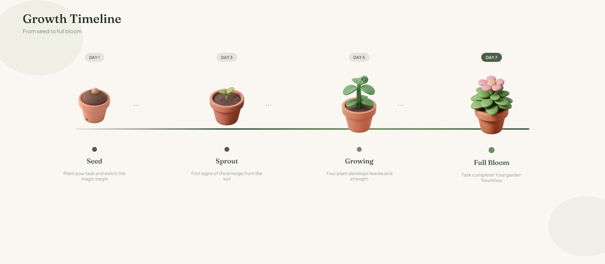
Bugün sulandı
1 gün atlandı
2 gün atlandı
3 gün atlandı
4 gün ya da daha fazla atlandı
Monstera, paşa kılıcı, fıçı kaktüsü ve salon sarmaşığı gibi başlangıç türleri.
Kalatya, kauçuk, barış çiçeği ve orkideler gibi seçkin türler.
Nadir türler, cüce meyve ağaçları, ata tohumu sebzeler ve dev ağaçlar.
Bahçen arkasındaki emeği yansıtır. Bitkileri yerleştir, dekor ekle, temalar arasında geçiş yap.
Cosy Cottage, Zen Studio, Nordic Loft, Grand Manor, Moroccan Terrace, Mediterranean, Attic Hideaway.
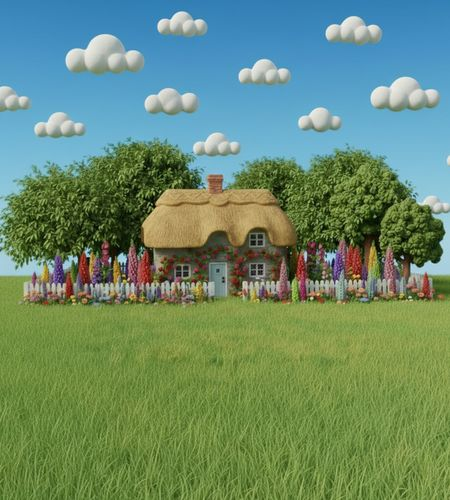
English Garden, Japanese Garden, Tropical Garden, Winter Garden, Treehouse, Picnic Lawn.
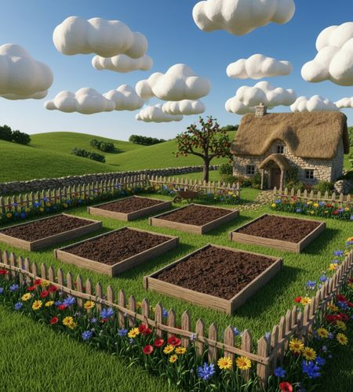
Allotment, Greenhouse, Rooftop Farm, Night Garden, Village House, Tuscan Vineyard.
İç mekân saksı bitkileri, Bahçe dış mekândaki çiçekler ve ağaçlar, Hobi bahçesi sebze ve otlar için. Her birinin kendi kataloğu var.
Cosy Cottage, English Garden ve Allotment ücretsiz. Diğerleri Bloom, Forest ya da Eden ile açılır.
Bir bitkiye dokunup fiyatını, seviyesini, Latince adını ve ilginç bilgilerini gör, sonra tohum harcayıp bahçene ekle.
Bitkileri ve 100'den fazla dekor parçasını istediğin yere sürükle, boyutlarını değiştir, kaldırmak için basılı tut.
Bahçeni istatistiklerinle birlikte kaydet ve görseli istediğin yerde paylaş.
Ortam sesleri, nefes alan bir bitki ve sonunda küçük bir ödülle tam ekran bir sayaç.
25, 45, 60 ya da 90 dakika seç. Nefes alan bir bitki animasyonu seni sakin tutar.
18 ortam sesinden birini seç: lofi, yağmur, kuşlar, piyano, tabla, downbeat, cumbia, afrobeat, plak, mırlayan bir kedi ve daha fazlası.
Oturum sırasında bitirdiğin görevler bir tohum fazla kazandırır, tamamlanan oturum da +3 tohum verir. Erken bitirirsen ödül gelmez.
Çıkmak istersen BloomDay önce sorar. Vazgeç dersen sayaca dönersin.
BloomDay her sabah gün için bir meydan okuma seçer. Hedefe ulaştığında kart yeşile döner ve tohumlar hemen gelir.
| Meydan okuma | Koşul |
|---|---|
| İkiye Katla | 2 görev tamamla. |
| Üçlü Büyüme | 3 görev tamamla. |
| Verimli Gün | 5 görev tamamla. |
| Temiz Sayfa | Bugün için planlanan bütün görevleri tamamla. |
| Erkenci Kuş | Öğleden önce bir görev tamamla. |
| Sabah Ritüeli | Saat 10'dan önce bir görev tamamla. |
| Tam Vaktinde | Saati olan bir görevi tamamla. |
| Önceden Planla | Bugünkü görevlerinden birine saat ver. |
| Sulama Günü ve Yeşil Parmak | Bir bitkiyi sula. |
| Özenli Bahçıvan | Bir görev tamamla ve bir bitkiyi sula. |
| Ateşi Söndürme | 3 günlük seriye ulaş. |
Toplam 58 rozet var: altı kategoride 48 başarı ve 10 bitki koleksiyonu. Her başarı açıldığı anda +5 tohum kazandırır.
Dayanıklılık jetonları BloomDay'in en nadir şeyidir. Parayla alınamazlar. Aynı anda en fazla 10 tane tutabilirsin.
| Dönüm noktası | Jetonlar |
|---|---|
| 7 günlük seri | +1 |
| 14 günlük seri | +1 |
| 30 günlük seri | +1 |
| 100 günlük seri | +1 |
| Bir bitki tam çiçek açar | +1 |
Bahçenin bir defteri var. Gününü boş bir sayfaya ya da bir şablona yaz, sonra kil çıkartmalar, washi bant ve kalem yazılarıyla süsle.
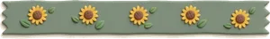
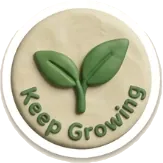
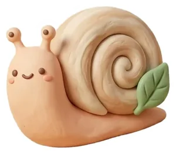
Boş bir sayfa ya da hazır günlük, haftalık, aylık veya alışkanlık şablonu seç. Günün sorusuna dokunursan o soru başlık olarak yazılmış bir sayfa açılır.
Başlık, not ve mühür tarzı yazı ekle. İstersen yazmak yerine konuş. Sayfayı bir bitkiye bağla ve kağıdını seç.
18 sette 250'den fazla kil çıkartma var: washi bantlar, gün ve ay başlıkları, tarihler, sayılar, konuşma balonları, hava durumu, minik canlılar, tatlılar, sekmeler, alışkanlıklar ve karalamalar. Büyüdükçe mühürler ve rozetler açılır, günün ruh hali maskotu da sayfaya yapıştırman için hep orada.
Kaydedilen sayfalar değişiklik için aynı düzenleyicide yeniden açılır. Sevdiklerini Bloom Board'una iliştir ya da sayfaları PDF olarak dışa aktar.
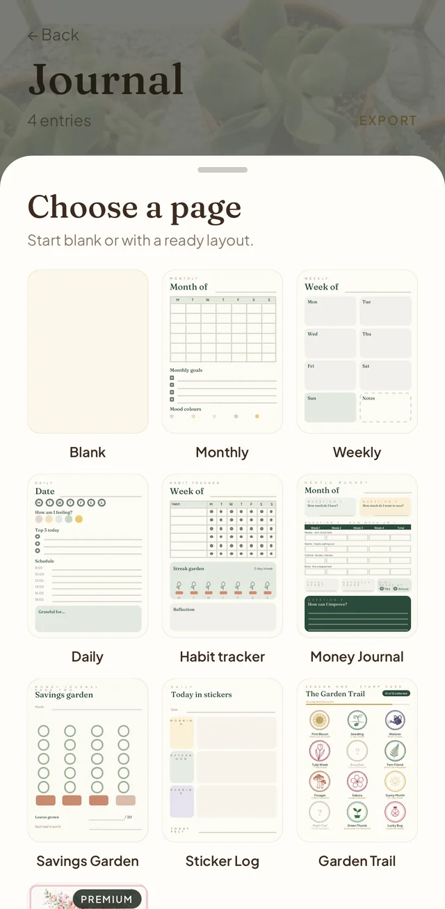
Bir bitki seç ve o çiçek açtığında olacağın kişiye bir mektup yaz.
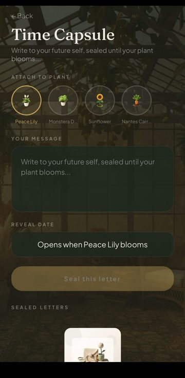
Bitki büyürken kapsül kapalı kalır. Bitki tam çiçek açtığında mektup kendiliğinden açılır.
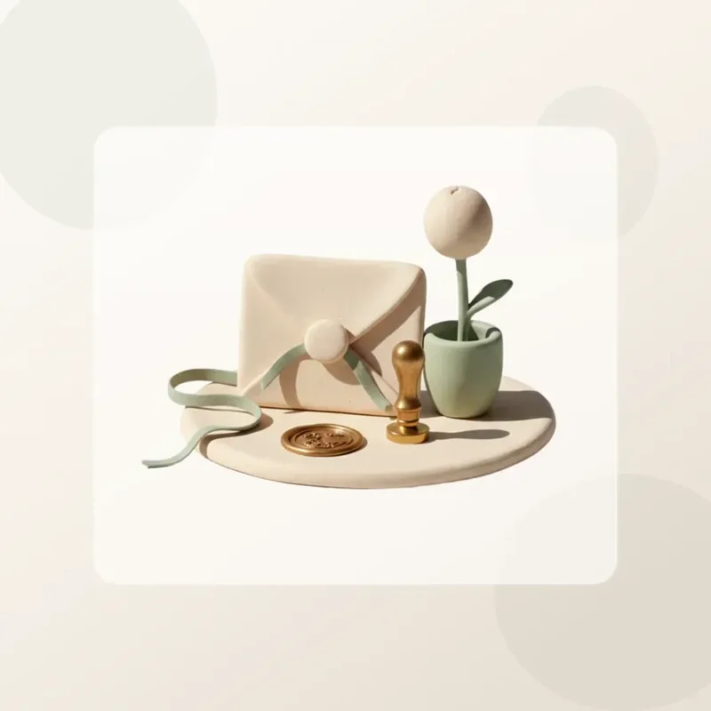
Kapsül satın alınamaz, atlanamaz, erken açılamaz. Yavaş büyüyen bir bitki için bir tane mühürlersen o çiçek açtığında ne yazdığını çoktan unutmuş olursun.
Kil iğnelerden yapılmış bir hayal panosu: hedefler, yerler, rutinler ve küçük keyifler. Onları panoya yerleştir, sonra görsel olarak paylaş.
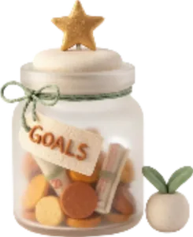
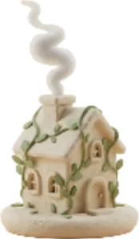
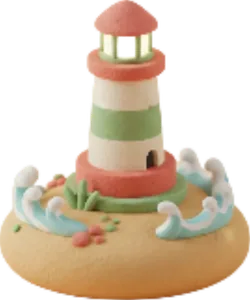
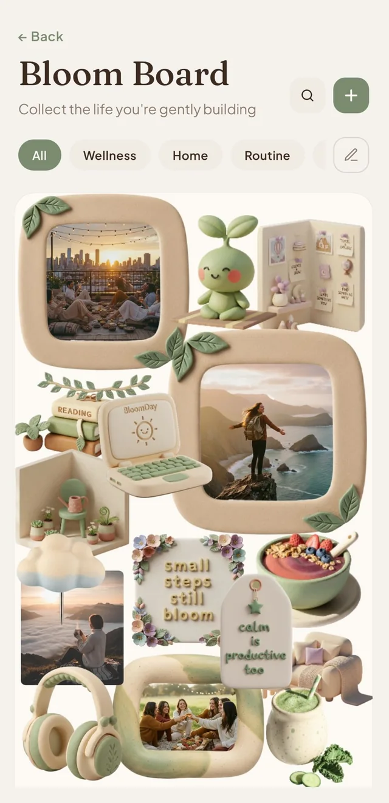
BloomDay her hafta ilerlemeni özetler, başlık da gerçek tamamlama oranına göre değişir. Her ayın saklanacak kendi kartı, yılın da kendi değerlendirmesi olur.
Profil kartına dokun ve gününe uyan maskotu seç. Maskot yarına kadar profil resmin olur ve günlükte çıkartma olarak görünür.
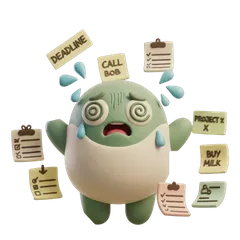
Bunalmış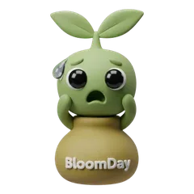
Şaşkın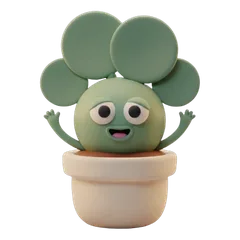
MutluŞu anki ve en iyi serin tek bakışta.
Bitkilerin ve topladıkların.
Seçtiğin iğneler, doğrudan ana ekranında.
BloomDay, Notion ve Obsidian'a bağlanır. Notion'da bir görev veritabanı seçersin, oradaki görevler BloomDay'de görünür. Birini burada bitirdiğinde Notion'da da işaretlenir, bahçen de büyür.
Ayarlar'ı aç, Entegrasyonlar altında Notion'ı bul, giriş yap ve senkronlanacak veritabanını seç.
Tamamlananlar iki yöne de akar. Bağlantıyı aynı ekrandan istediğin zaman kesebilirsin.
Bir kez, Her gün, Hafta içi, Her hafta, 2 haftada bir, Her ay ya da takvimden seçtiğin tarihler. Her gün kendi tamamlanma durumunu ayrı tutar.
Tekrarlayan bir görevi sola kaydır ve Durdur'a dokun. Görev tek seferliğe döner ve hatırlatıcısı iptal edilir.
BloomDay, Obsidian kasandaki onay kutularını okur ve görevlere çevirir. İnternette ayarlanacak bir şey yok, notların da olduğu yerde kalır.
Ayarlar'ı aç, Entegrasyonlar altında Obsidian'ı bul ve kasa klasörünü seçmek için dokun. Kasan iCloud Drive'daysa oradaki Obsidian klasörünün içine bak.
Notlarında - [ ] görev diye yazdığın her satır bugünün listesine düşer.
Görevi BloomDay'de tamamla, notundaki kutu da işaretlensin, bahçen de büyüsün.
BloomDay'de eklediğin görevler kasanın en üstündeki BloomDay adlı nota yazılır.
Görevlerin uygulamada başlaması gerekmiyor. E-postayla gönder, başka bir uygulamadan paylaş ya da tarayıcıdan bir sayfayı kaydet, hepsi BloomDay'e düşer.
Ayarlar'ı aç, sonra Entegrasyonlar, sonra E-postayla görev ekle. @bloomdayapp.com ile biten kişisel bir adresin olur. Bu adrese gelen her şey göreve dönüştüğü için onu kimseyle paylaşma.
Konu satırı görev olur, mailin ilk satırı da notu. Konuya “Yarın 10'da dişçiyi ara” gibi bir gün ya da saat yazarsan BloomDay onu Türkçe, İngilizce ya da İspanyolca anlayıp ayarlar.
iPhone, iPad ve Mac'te Paylaş'a dokun ve BloomDay'i seç. Paylaşılan bir bağlantı “Bak:” ile başlayan bir görev olur, bağlantı da notunda saklanır. Mac'te bunu bir kez Sistem Ayarları'nda, Uzantılar altında Paylaşım bölümünden aç.
Safari'de BloomDay uzantısını aç, sonra herhangi bir sayfada simgesine dokun. Görevi ve notu düzenle, Bahçeme gönder'e dokun. Chrome uzantısı da yolda.
Saatin için küçük bir BloomDay. Bugün önemli olanı gösterir, telefona uzanmadan görev eklemeni sağlar.
İlerleme halkasıyla günün görevleri. Bitirmek için bir göreve dokun.
Sırada ne olduğuna sakin bir bakış.
Şu anki serin ve bu haftanın günleri.
Artı düğmesine dokun ve konuş ya da yaz. Bir gün ya da saat söylersen telefonun onu ayarlar.
BloomDay'i iPhone'una yükle, saat uygulaması Watch uygulamasında hazır olur. Günü tek bakışta görmek için BloomDay komplikasyonunu saat yüzüne ekle.
Aynı ekranlar Android saatlerde de var. BloomDay'i Android telefonuna yüklediğinde saat uygulaması Google Play'den birlikte gelir.
BloomDay iPhone, iPad, Mac ve Android'de çalışır. Aynı hesapla giriş yap, her şey peşinden gelsin.
Apple, Google ya da e-postayla giriş yap. Görevlerin, günlük sayfaların, bahçen ve ilerlemen cihazların arasında senkronlanır.
BloomDay kendiliğinden senkronlanır. Son senkronun ne zaman yapıldığını görmek ya da hemen senkronlamak için Ayarlar'da Senkronizasyon'u aç.
Görevlerini planla ve günlüğünü geniş, rahat ekranlarda düzenle. Mac uygulamasında reklam yok.
BloomDay ücretsizdir, arada reklam gösterir. Ücretli planlar reklamları kaldırır, bahçenin ve günlüğün daha fazlasını açar.
Görevler, tohumlar, başlangıç bitkileri, üç ücretsiz tema, Odak Modu, 3 günlük sayfası, başlangıç çıkartmaları ve Bloom Board iğneleri.
Reklamsız, sınırsız sulama, seçkin bitkiler ve temalar, daha fazla çıkartma seti ve sınırsız günlük sayfası.
Bloom'daki her şey, artı nadir bitkiler, daha fazla tema ve daha fazla çıkartma seti.
BloomDay'in sunduğu her şey. Tek seferlik ömür boyu satın alım olarak da var.
Rare Houseplants, Japanese Garden, Orchard, Heirloom Vegetables, Herb Garden, Winter, Autumn ve Terrarium gibi temalı paketler. Her biri tohumların için yeni sahneler, bitkiler ya da dekorlar açar.
Bütün koleksiyonlar tek satın alımda, tek tek almaktan daha uygun.
Şimdiki ve gelecekteki düzenli setlerle bütün günlük çıkartmaları, kalıcı olarak.
Alışkanlık kurmak ve bahçeni sürdürebileceğin bir hızda büyütmek için pratik öneriler.
Büyüme sulamadan gelir. Uygulamayı aç, bir bitkiyi sula, gerisi kendiliğinden gelir.
Oturum sırasında bitirilen görevler bir tohum fazla kazandırır, oturumun kendisi de üç tohum daha ekler.
Forest ve Eden bitkileri yüzlerce tohum tutar. Onlar için biriktirmek hak edilmiş hissettirmeli.
Seriyi tek bir bitmiş görev ayakta tutar. Ağır günlerde en küçüğünü yap.
“Yarın 6'da annemi ara” de, BloomDay günü ve saati senin yerine doldursun. Saatinden de çalışır.
Gece kısa bir günlük sayfası yeter. Bir çıkartma ve üç satır da sayılır.
Her ödül gerçek emeğin sonucu olmalı, onun etrafından dolanan bir kısayol değil. Büyüme sessizdir. Bir görev, bir gün, bir yaprak, adım adım olur.